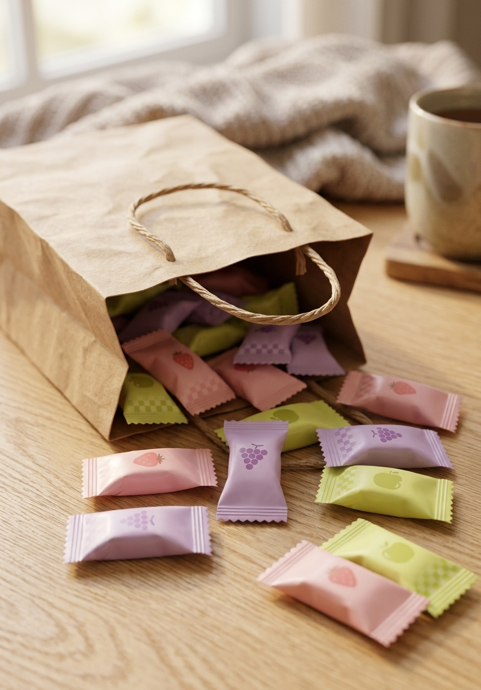

Real fruit-flavored, gluten-free chewy candy from Morinaga — a small bite of Japan's most beloved snack, in every color of the bag.

Since 1975, Morinaga has perfected a soft, taffy-like chew that tastes like actual fruit — not artificial sugar.
Creamy and soft instead of sticky or hard — designed to be swallowed comfortably, unlike Western gum.
Easy to share, easy to pack in a lunch bag or gift box — no mess, no sticking together.
What started as a chewing-gum alternative in 1931 became one of Japan's most recognized sweets, with over 165 flavors developed since.
This regular mix bag brings the classic flavor lineup — the same one found in convenience stores across Japan.
A go-to sweet treat that doesn't melt, crumble, or need refrigeration.
Small, individually wrapped, and travel-friendly — an easy addition to any gift box.
A great entry point if you're curious about Japanese snacks but don't know where to start.
The classic lineup includes grape, strawberry, and green apple among the rotating fruit flavors.
It's labeled gluten-free; check the ingredient list on the package for full allergen details.
It has the soft, chewy texture of taffy but is meant to be fully eaten — no chewing gum base.
Soft, fruity, individually wrapped — see current pricing and availability on Amazon.
Check Price on Amazon →